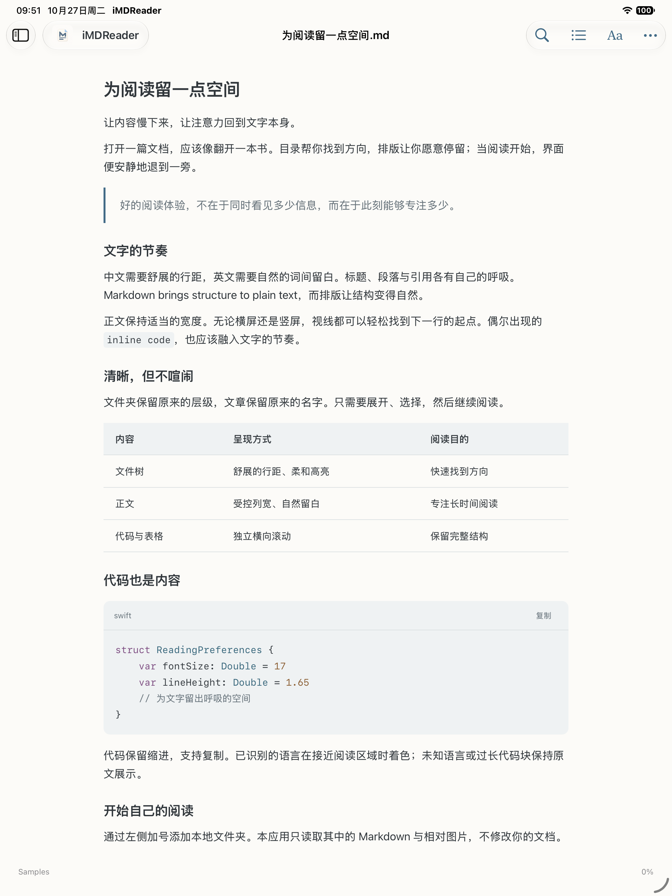

来源有序，随手打开
单篇 Markdown、本地文件夹、GitHub 链接。保留目录层级，置顶常读内容，按自己的节奏浏览。
Your documents. A quieter place to read.
打开一篇文档，就像翻开一本书。
从本地文件到 GitHub，让文字、代码与目录
回到清晰、舒适的阅读节奏。
Mac 0.2.1 · macOS 14+ · Apple Silicon / Intel
iPhone 与 iPad 的 App Store 版本正在准备中。

单篇 Markdown、本地文件夹、GitHub 链接。保留目录层级，置顶常读内容，按自己的节奏浏览。
代码高亮、表格、文章目录与文内查找。调整字号、明暗和配色，让内容更容易阅读。
不编辑、不移动、不删除原文件。移除来源只清理阅读器中的引用；授权与缓存由你管理。
Mac 正式版已发布，提供 DMG 与 ZIP。
iPhone / iPad 商店版尚未发布，不提供预订或下载。